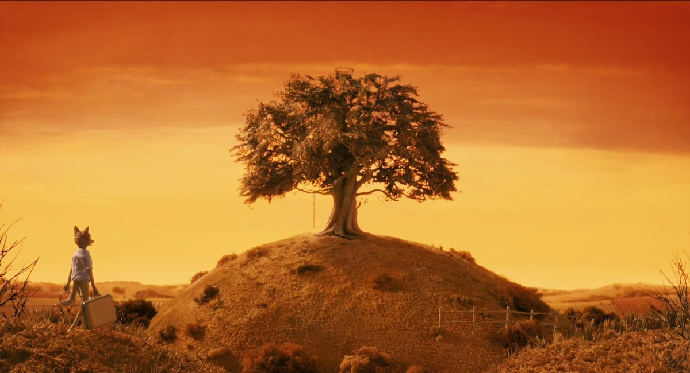

Foxes are the best!
About It
The movie The Fantastix Mr. Fox is a movie about a fox nick-named Fantastic Mr. Fox that has a fox family with Fox children but their fox lives are interrupted when Fantastic Mr. Fox has the idea to do some fox sneekery. His fox stealing is found out and his fox family has to go into fox hiding.